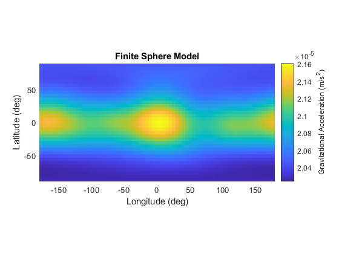
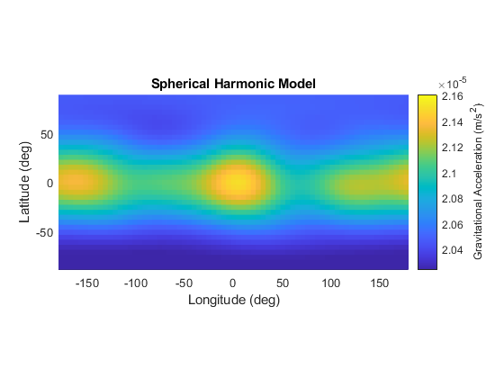
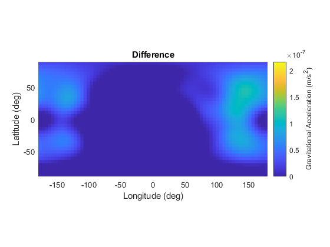

Generating a Gravity Field from a Shape Model:
Chris Gnam - 2021
Contents
Include all Packages:
clear; matlabrc; clc; close all; rng(1); addpath(genpath('../../src')); % Include all source code addpath(genpath('../../lib')); % Include all 3rd party libraries addpath(genpath('data')); % include the data specific to this project % Load in a bennu shape model: mass = 78e9; %(kg) Mass of bennu bennu = ShapeModel('bennu.obj','Mass',mass); % Densely pack the shape model with spheres: sphere_radius = 20; %(m) spheres = bennu.packSpheres(sphere_radius); % Create a gravity field using finite element method: gravField = GravityField('FiniteSphere',spheres);
Generate a spherical harmonic model:
Define the size of the spherical harmonic potential to be fit:
N = 10; M = 10; [~,radii] = normr(bennu.vertices); ref_radius = mean(radii); truthType = 'FiniteSphere'; % Options for the optimzation routine: options = optimoptions('fmincon','Display','iter',... 'FiniteDifferenceStepSize', 1e-16,... 'OptimalityTolerance',1e-12,... 'StepTolerance',1e-16,... 'MaxFunctionEvaluations',1e6); % Fit the gravity field: gravField.generateSphHarm(N,M,ref_radius,truthType,options);
First-order Norm of
Iter F-count f(x) Feasibility optimality step
0 118 5.980945e-01 0.000e+00 4.219e+01
1 249 4.210642e-01 0.000e+00 1.277e+01 2.113e-02
2 371 3.181663e-01 0.000e+00 8.049e+01 2.113e-02
3 495 2.344136e-01 0.000e+00 1.443e+01 1.056e-02
4 614 1.465394e-01 0.000e+00 2.304e+01 1.056e-02
5 739 1.339636e-01 0.000e+00 1.360e+01 2.641e-03
6 860 1.306792e-01 0.000e+00 1.027e+01 1.320e-03
7 982 1.140603e-01 0.000e+00 9.298e+00 2.641e-03
8 1107 1.066685e-01 0.000e+00 2.248e+01 2.311e-03
9 1229 9.742627e-02 0.000e+00 2.429e+01 4.621e-03
10 1349 9.129670e-02 0.000e+00 1.915e+01 2.311e-03
11 1473 8.400305e-02 0.000e+00 5.967e+00 1.155e-03
12 1592 8.216477e-02 0.000e+00 5.551e+00 1.155e-03
13 1714 8.146775e-02 0.000e+00 7.633e+00 2.311e-03
14 1833 7.986592e-02 0.000e+00 1.207e+01 2.311e-03
15 1956 7.677582e-02 0.000e+00 7.494e+00 2.311e-03
16 2079 7.584742e-02 0.000e+00 9.437e+00 1.155e-03
17 2199 7.558770e-02 0.000e+00 2.498e+00 5.777e-04
18 2321 7.294424e-02 0.000e+00 4.163e+00 1.155e-03
19 2442 7.275071e-02 0.000e+00 5.135e+00 5.777e-04
20 2565 7.215249e-02 0.000e+00 2.637e+00 5.777e-04
21 2688 7.208636e-02 0.000e+00 2.082e+00 5.777e-04
22 2808 7.201180e-02 0.000e+00 1.124e+01 2.888e-04
23 2930 7.116353e-02 0.000e+00 1.027e+01 5.777e-04
24 3049 6.988906e-02 0.000e+00 6.661e+00 1.155e-03
25 3172 6.963705e-02 0.000e+00 3.192e+00 1.155e-03
26 3291 6.911525e-02 0.000e+00 2.220e+00 1.155e-03
27 3413 6.902816e-02 0.000e+00 1.943e+00 2.311e-03
28 3537 6.866778e-02 0.000e+00 5.967e+00 5.777e-04
29 3661 6.866369e-02 0.000e+00 6.245e+00 1.444e-04
30 3780 6.856654e-02 0.000e+00 4.580e+00 1.444e-04
First-order Norm of
Iter F-count f(x) Feasibility optimality step
31 3902 6.812225e-02 0.000e+00 4.718e+00 2.888e-04
32 4021 6.792398e-02 0.000e+00 8.049e+00 5.777e-04
33 4144 6.751964e-02 0.000e+00 9.021e+00 5.777e-04
34 4263 6.728702e-02 0.000e+00 2.914e+00 5.777e-04
35 4386 6.722891e-02 0.000e+00 7.772e+00 5.777e-04
36 4505 6.683625e-02 0.000e+00 3.469e+00 5.777e-04
37 4627 6.605677e-02 0.000e+00 3.608e+00 1.155e-03
38 4751 6.602215e-02 0.000e+00 9.298e+00 5.777e-04
39 4871 6.601451e-02 0.000e+00 6.800e+00 2.888e-04
40 4993 6.573296e-02 0.000e+00 3.192e+00 5.777e-04
41 5116 6.563792e-02 0.000e+00 4.163e+00 2.888e-04
42 5235 6.561984e-02 0.000e+00 3.469e+00 2.888e-04
43 5358 6.552052e-02 0.000e+00 2.359e+00 2.888e-04
44 5479 6.551530e-02 0.000e+00 3.331e+00 7.221e-05
45 5601 6.550583e-02 0.000e+00 2.220e+00 1.444e-04
46 5762 6.550583e-02 0.000e+00 3.608e+00 2.627e-16
47 5882 6.550583e-02 0.000e+00 4.025e+00 1.313e-16
Local minimum possible. Constraints satisfied.
fmincon stopped because the size of the current step is less than
the value of the step size tolerance and constraints are
satisfied to within the value of the constraint tolerance.
Evaluate and Compare the Two Fields:
num_long = 360/5; num_lat = 180/5; rho = 500; [longitude,latitude,positions] = generateGridMap(num_long,num_lat,rho); % Evaluate the finite sphere model: [acce1_fs,accel_mag_fs] = gravField.batchAcceleration(positions,eye(3),'FiniteSphere'); % Evaluate the spherical harmonic model: [acce1_sh,accel_mag_sh] = gravField.batchAcceleration(positions,eye(3),'SphHarm'); % Plot the results: longitude = rad2deg(longitude); latitude = rad2deg(latitude); figure() surf(longitude,latitude,accel_mag_fs,'EdgeColor','none'); axis equal c = colorbar; c.Label.String = 'Gravitational Acceleration (m/s^2)'; vals = caxis; view([0 90]) title('Finite Sphere Model') xlabel('Longitude (deg)') ylabel('Latitude (deg)') figure() surf(longitude,latitude,accel_mag_sh,'EdgeColor','none'); axis equal c = colorbar; c.Label.String = 'Gravitational Acceleration (m/s^2)'; caxis(vals); view([0 90]) title('Spherical Harmonic Model') xlabel('Longitude (deg)') ylabel('Latitude (deg)') figure() surf(longitude,latitude,accel_mag_sh - accel_mag_fs,'EdgeColor','none'); axis equal c = colorbar; c.Label.String = 'Gravitational Acceleration (m/s^2)'; caxis([0 vals(2)/100]); view([0 90]) title('Difference') xlabel('Longitude (deg)') ylabel('Latitude (deg)')  